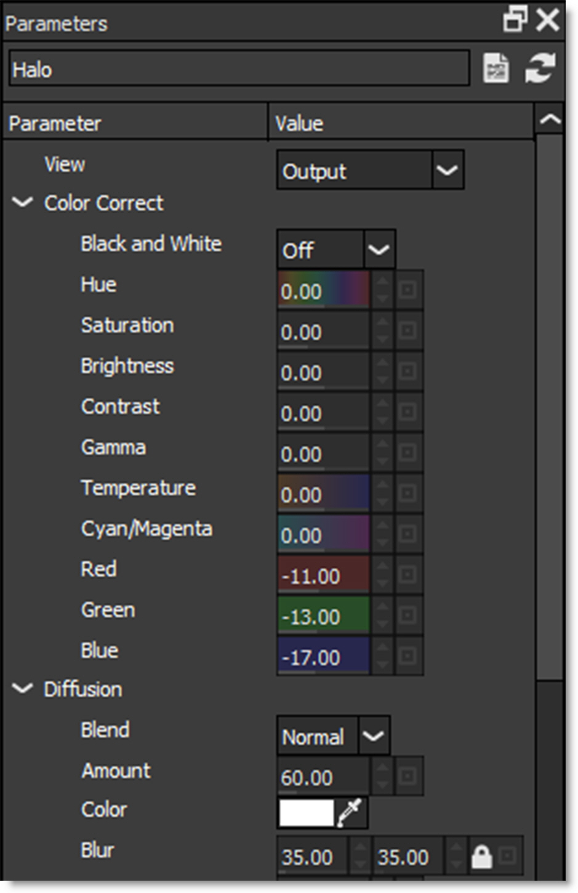
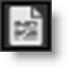
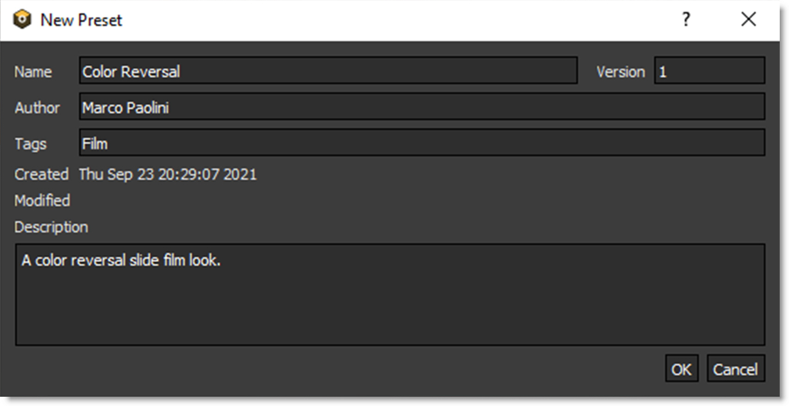

Creating Presets
1 Select a filter and choose a preset.
2 In the Parameters window, adjust the filter parameters to your liking.
3 To create a new preset based on the current parameter settings, click the Create Custom Preset icon located at the top right of the Parameters window.
4 When the New Preset window opens, enter the desired information and press OK to create the preset.
5 In the Presets window, you will see the newly created custom preset.